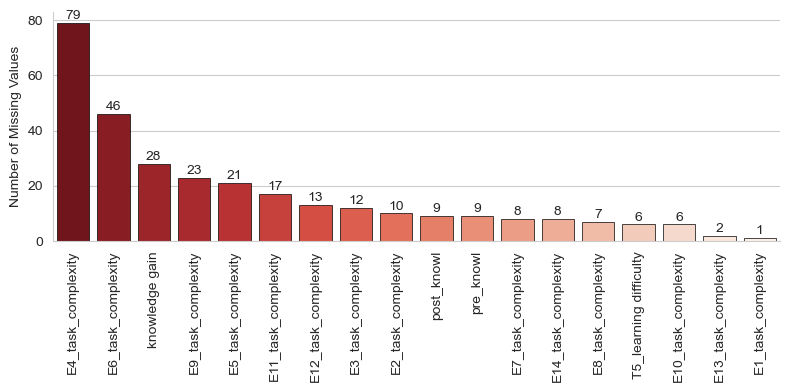
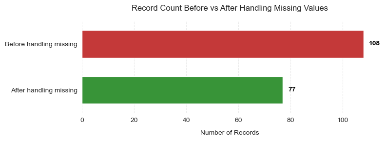

Handling missing values and restructuring the dataset
Author
Affiliation
Pankaj Chejara
Tallinn University
Published
March 4, 2025
Several variables show missing entries (see Figure 1), particularly in episodes’ task complexity. The task complexity in any episode is computed by taking an average of complexity levels of tasks completed by a student. Therefore, if a student has not completed any tasks in an episode then the task complexity for that episode is not defined.
import seaborn as snsimport matplotlib.pyplot as plt# Calculate missing countsmissing_counts = df.isnull().sum().sort_values(ascending=False)missing_counts = missing_counts[missing_counts >0] # Only show variables with missing data# Create plotplt.figure(figsize=(8, 4))ax = sns.barplot(x=missing_counts.index, y=missing_counts.values, palette="Reds_r", # Red gradient (dark = more missing) edgecolor='black', linewidth=0.5)# Add value labelsfor p in ax.patches: ax.annotate(f"{int(p.get_height())}", (p.get_x() + p.get_width() /2., p.get_height()), ha='center', va='center', xytext=(0, 5), textcoords='offset points')# Style adjustmentsplt.title("", pad=15)plt.xlabel("")plt.ylabel("Number of Missing Values")plt.xticks(rotation=90)sns.despine()plt.tight_layout()plt.show()

Figure 1: Missing Values
Handling missing values
We will handle the missing values in the following manner.
Delete all records where knowledge related information is missing (i.e., records having missing values for knowledge gain, pre knowledge or post knowledge)
Remove records with missing values in T5_learning_difficulty.
Remove episode E4 data. This episode consisting of two tasks and a significant number of students did not completed those tasks.
Impute missing values for task complexity in rest of the episodes. This decision will allow us to generate new features (we will discuss them in the next section.
Code
# Delete all records where knowledge related information is missingdf_knowledge_clean = df_knowledge.dropna(axis=0, how='any')# Deleting records with missing value in T5_learning_difficulty columndf_self_report_clean = df_self_report.dropna(axis=0,how='any')# Removing E4 episodee4_non_cols = [item for item in df_episodes.columns if'E4'notin item]df_episodes_non_e4 = df_episodes[e4_non_cols]# Impute complexity with a very small numberdf_episodes_clean = df_episodes_non_e4.fillna(0.00000001)# Final dataframeclean_df = df_knowledge_clean.join(df_self_report_clean, how='inner').join(df_episodes_clean, how='inner')
Code
# Set stylesns.set_style("whitegrid")plt.figure(figsize=(8, 3))# Create plotax = sns.barplot(x=[df.shape[0], clean_df.shape[0]], y=['Before handling missing', 'After handling missing'], palette=["#d62728", "#2ca02c"], # Red/Green color scheme saturation=0.8, width=0.6)# Add value labelsfor i, v inenumerate([df.shape[0], clean_df.shape[0]]): ax.text(v +max([df.shape[0], clean_df.shape[0]])*0.02, i, f"{v:,}", color='black', va='center', fontweight='bold')# Stylingplt.title("Record Count Before vs After Handling Missing Values", pad=15)plt.xlabel("Number of Records", labelpad=10)plt.ylabel("")sns.despine(left=True, bottom=True)ax.grid(axis='x', linestyle='--', alpha=0.4)ax.set_axisbelow(True)plt.tight_layout()plt.show()

Figure 2: Before and after handling missing values
We will now restructure the data for simplifying our analysis later. In this restructure, we will transform the Episode interaction data from Wide format to Long format. That is converting the data from its current form (each student’s record in a single row for all episodes) to a new form (one row will contain only interaction to a single episode).
The new data will look like the below dataframe.
Code
import pandas as pdimport numpy as np# First, let's identify all episode prefixes (E1, E2, etc.)episode_cols = [col for col in df.columns if col.startswith('E') andnot'_'in col]episode_prefixes = [col for col in episode_cols if col.replace('E','').isdigit()]# Create a list to store all transformed episode dataepisode_data = []for prefix in episode_prefixes:# Get all columns for this episode episode_cols = [col for col in df.columns if col.startswith(prefix +'_') or col == prefix]# Create a temporary DataFrame for this episode episode_df = df[episode_cols].copy()# Rename columns by removing the episode prefix new_cols = {}for col in episode_df.columns:if col == prefix: new_cols[col] ='episode_id'else: new_cols[col] = col[len(prefix)+1:] # Remove prefix and underscore episode_df = episode_df.rename(columns=new_cols) episode_df['episode_id'] = prefix[1:]# Add student ID if available episode_df['Student_ID'] = df.index episode_data.append(episode_df)# Combine all episodes into one DataFramelong_df = pd.concat(episode_data, ignore_index=True)# Clean up column names (handle inconsistent naming)long_df.columns = long_df.columns.str.strip('_').str.lower()# Standardize column names (fix E13/E14 inconsistencies)column_mapping = {'total hints': 'total_hints','total materials': 'total_materials','total_activity': 'total_activity_count','__addmat_used': 'addmat_used'}long_df = long_df.rename(columns=column_mapping)# Reorder columns if neededbase_cols = ['student_id', 'episode_id'] if'student_id'in long_df.columns else ['episode_id']metric_cols = [col for col in long_df.columns if col notin base_cols]long_df = long_df[base_cols +sorted(metric_cols)]# Converting task_complexity data typelong_df.task_complexity = pd.to_numeric(long_df.task_complexity, errors='coerce')long_df.fillna({'task_complexity':0.000001}, inplace=True)long_df.head()
student_id
episode_id
addmat_used
hints_used
task_complexity
tasks_completed
total_activity_count
total_hints
total_materials
total_tasks
0
keila1
1
0.0
0.00
1.43
87.5
42
3.0
2.0
8
1
keila2
1
0.0
66.67
1.43
87.5
75
3.0
2.0
8
2
keila3
1
0.0
0.00
1.33
37.5
28
3.0
2.0
8
3
keila4
1
0.0
66.67
1.50
50.0
73
3.0
2.0
8
4
keila5
1
0.0
33.33
1.50
50.0
41
3.0
2.0
8
Column explanation
Column Name
Description
Example
episode_id
Unique identifier for the learning episode (e.g., 1, 2)
"10"
student_id
Unique identifier for the student
"keila1"
addmat_used
Percentage of additional/supplementary materials accessed by the student
50
hints_used
Percentage of hints requested by the student during tasks
33.3
task_complexity
Numeric measure of task difficulty of tasks completed by the student (higher = more complex)
0.75
tasks_completed
Percentage of tasks successfully finished by the student
50
total_activity_count
Total interactions/actions taken by the student in the episode
17
total_hints
Maximum hints available in the episode
5
total_materials
Total supplementary materials available in the episode
4
total_tasks
Total tasks available in the episode
8
New feature generation
Now, we will generate some new features from the existing ones. The goal is to take complexity into account to generate measures for hints used and task completed.
Logic
adjusted_hints_used = hints_used / task_complexity : If a student has used a same percentage of hints in two episodes having tasks with different complexity then hints used for difficult tasks will be treated lower than hints used for simple tasks.
adjusted_task_completion = tasks_completed * task_complexity: If a student has completed a same percentage of tasks in two episodes having tasks with different complexity then completion for difficult tasks will be treated higher than task completion of simple tasks.
Code
# New feature generationlong_df['adjusted_hints_used'] = (long_df['hints_used'] * long_df['total_hints'] *.001) / long_df['task_complexity']long_df['adjusted_tasks_completed'] = (long_df['tasks_completed'] * long_df['total_hints'] *.001) * long_df['task_complexity']long_df['adjusted_activities'] = long_df['total_activity_count'] / long_df['total_tasks']# Save the DataFramelong_df.to_csv('restructure_vara_data.csv',index=False)
We will now aggregate episodes data for each students. We will obtain the following measures for three attributes: adjusted_hints_used, adjusted_tasks_completed, adjusted_activities
Mean
Median
Min
Max
Standard deviation
Total
Quartile-1
Quartile-3
Code
# Group by student_id and calculate statistics for selected columnsstudent_stats = long_df.groupby('student_id').agg({'adjusted_hints_used': [ ('mean', 'mean'), ('total', 'sum'), ('std', 'std'), ('median', 'median'), ('q1', lambda x: x.quantile(0.25)), ('q3', lambda x: x.quantile(0.75)) ],'adjusted_tasks_completed': [ ('mean', 'mean'), ('total', 'sum'), ('std', 'std'), ('median', 'median'), ('q1', lambda x: x.quantile(0.25)), ('q3', lambda x: x.quantile(0.75)) ],'adjusted_activities': [ ('mean', 'mean'), ('total', 'sum'), ('std', 'std'), ('median', 'median'), ('q1', lambda x: x.quantile(0.25)), ('q3', lambda x: x.quantile(0.75)) ]})# Flatten multi-level column namesstudent_stats.columns = ['_'.join(col).strip() for col in student_stats.columns.values]# Reset index to keep student_id as a columnstudent_stats = student_stats.reset_index()# Saving cleaned datastudent_stats.to_csv('agg_behavior_metrics.csv',index=False)df_self_report_clean['student_id']= df_self_report_clean.indexdf_self_report_clean.to_csv('self_report_clean.csv',index=False)df_knowledge_clean['student_id']= df_knowledge_clean.indexdf_knowledge_clean.to_csv('knowledge_clean.csv',index=False)student_stats.head()